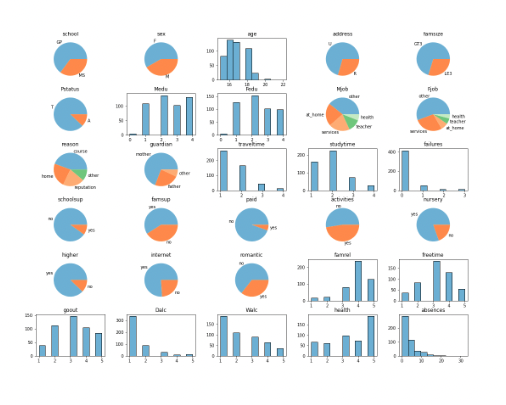

Hosted a website using Flask for recommending Restaurants in Bengaluru, India
Engineered an Extra Trees Regression model to predict restaurant ratings and deployed it on the cloud using Flask.
Conducted an in-depth Data Visualization on the dataset before initiating the training process and achieved an R2 score of over 92%.
Formulated an ensemble model by comparing various multiple regression models.
Technologies Used
Python, Flask, Pandas, Numpy, Matplotlib, Scikit-Learn.
Implemeted 2-class and 3-class perceptron algorithm using SGD for the classification of two different datasets. Visualized the results by plotting Linear Decision Boundaries
Implemented a Linear Regressor on the MSE criterion function to investigate different learning rate schedules and their effect on convergence in iterative gradient descent (GD) optimization.
Investigated a Time-series model for predicting the production quantity of crops based on pre-annual data.

Developed Machine Learning Systems that operate on the given real-world dataset